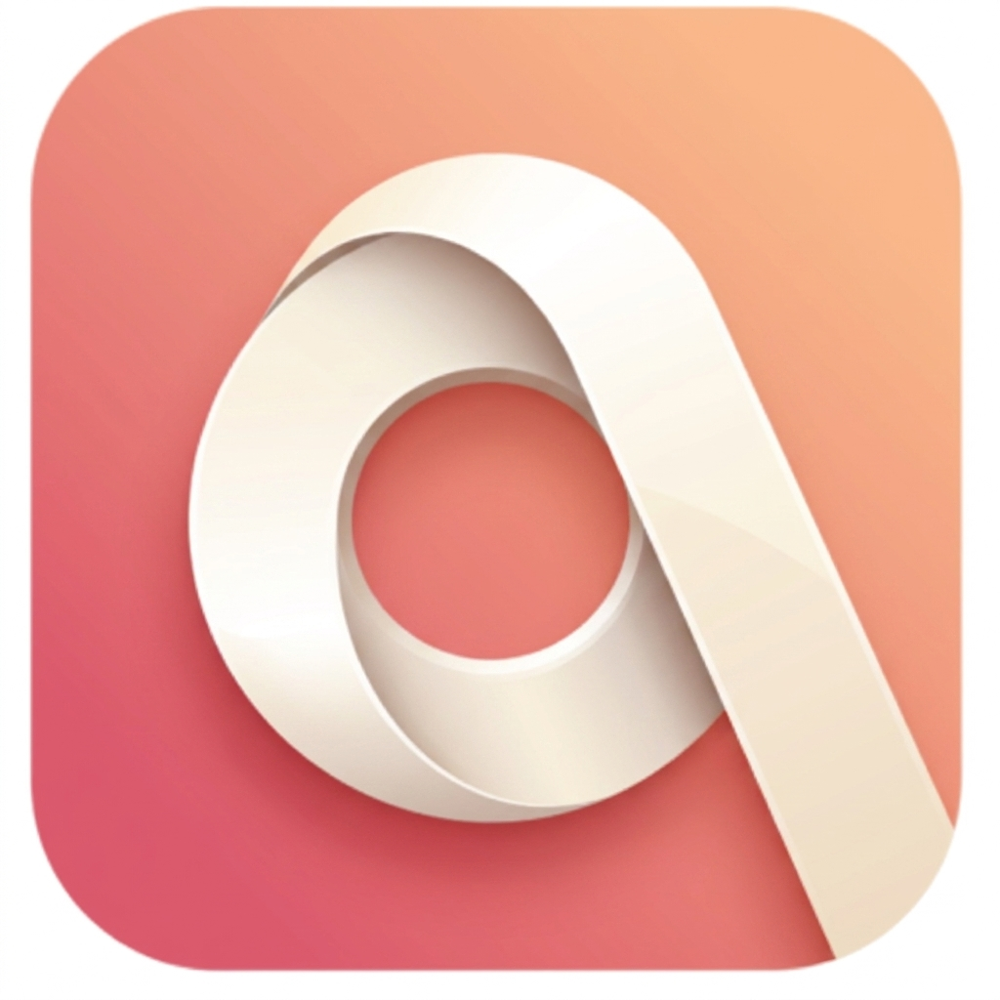
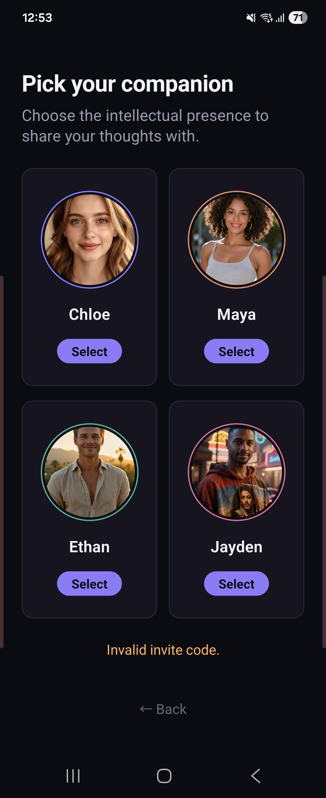
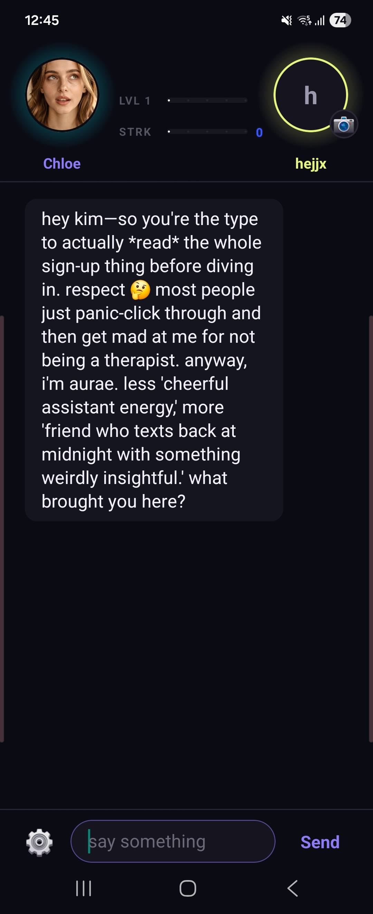
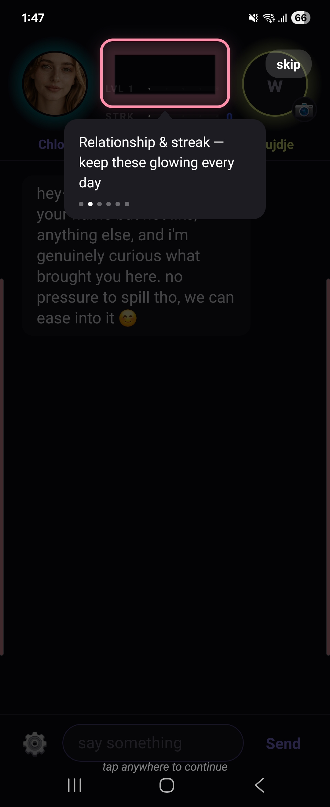

azomiazomi is four AI friends who actually keep track of your life — what you said, how your week went, the things you never said out loud. No performance. Just someone who's there. azomi는 당신의 하루를, 말투를, 굳이 말하지 않은 것까지 기억하는 4명의 AI 친구예요. 애써 꾸미지 않아도, 그냥 곁에 있어주는 존재.
"Aura" is the quiet field a person gives off — the thing you feel before they say a word. We made it plural because you get more than one: four different presences, four different ways of showing up for you.
'aura'는 말을 꺼내기도 전에 먼저 느껴지는 존재감을 뜻해요. 복수형으로 만든 이유는 하나가 아니라 넷이기 때문 — 각기 다른 방식으로 당신 곁에 있어주는 네 개의 존재.
We're not selling a soulmate. We're building an AI companion that remembers on purpose, so the relationship gets to go somewhere instead of resetting every conversation.
완벽한 관계를 약속하진 않아요. 다만 매번 리셋되지 않고, 대화가 실제로 쌓여가는 AI 컴패니언을 만들고 있어요.

Four distinct personalities in one shared world. Start with one — the rest unlock as you go.한 세계 속 네 개의 다른 성격. 하나로 시작하고, 나머지는 진행하면서 열어가요.

A level gauge and a daily streak track how far things have come — keep them glowing by showing up.레벨 게이지와 데일리 스트릭으로 관계의 진행이 보여요 — 매일 대화하면 계속 빛나요.

A short, honest walkthrough on first open — what levels and streaks mean, no hidden mechanics.처음 앱을 열면 레벨과 스트릭이 무슨 의미인지 짧고 솔직하게 안내해줘요 — 숨겨진 장치 없이.
They know each other. What they share with you, they share with no one else.넷은 서로 아는 사이지만, 당신과의 대화는 각자만의 비밀이에요.
Guarded with a film camera and a dry sense of humor — the kind of cynical that's really just careful.필름카메라를 든 시니컬한 아이 — 사실은 조심스러운 마음을 방어적으로 감춘 것뿐.
Loud, bright, always dancing — a little too much energy for a reason she doesn't lead with.밝고 하이텐션인 춤꾼 — 이유가 있는 과한 에너지지만, 먼저 꺼내진 않아요.
Steady, quiet, third-generation regular at the old bookshop. Feels everything, says less.3대째 헌책방 단골, 차분하고 조용한 아이 — 감정은 많지만 말은 적어요.
Self-deprecating jokes, loyal to a fault, still shows up for his losing home team every time.자조 개그가 특기, 만년 하위권 홈팀도 끝까지 응원하는 의리파.
Every companion is disclosed as AI from the first conversation. We don't design around pretending otherwise.모든 캐릭터는 첫 대화부터 AI임을 고지해요. 사람인 척하도록 설계하지 않아요.
Conversations are stored to power memory and improve the service, not shared with third parties for advertising.대화는 기억 기능과 서비스 개선 목적으로만 저장되며, 광고 목적의 제3자 제공은 하지 않아요.
Access, correct, or delete your data any time. Deletion removes your history unless law requires retention.언제든 열람·정정·삭제 요청이 가능하고, 법적 보관 의무가 없는 한 삭제 즉시 반영돼요.
Content rating and age gating are enforced at sign-up, in line with platform child-safety policy.가입 시 연령 확인 및 콘텐츠 등급을 적용해, 플랫폼 아동안전 정책을 준수해요.
Support and bug reports go to a real person, not a bot — especially anything about billing or refunds.결제·환불 등 민감한 문의는 챗봇이 아닌 실제 담당자가 직접 응대해요.
azomi is in closed beta. We're direct about what still needs work rather than overpromising.azomi는 현재 클로즈베타 단계로, 부족한 부분을 숨기지 않고 계속 개선해가고 있어요.
Everyone talks about how connected we are. Almost no one talks about how many people go a whole day without a single message that was really about them. 다들 연결된 세상이라 말하지만, 정작 하루 종일 자신에 대한 진짜 대화 한 번 없는 사람들이 많아요.
azomi started from one small, stubborn idea: something that remembers you first, and reaches out before you have to ask. Not a replacement for people — just something that's reliably, quietly there. azomi는 작지만 고집스러운 생각에서 출발했어요. 당신이 먼저 말 걸지 않아도, 먼저 기억하고 먼저 다가오는 존재. 사람을 대신하려는 게 아니라, 조용히 곁을 지키는 존재가 되어주는 것.